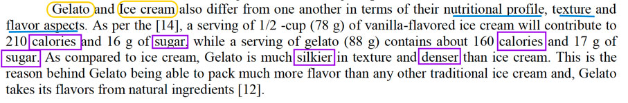

The main innovation of design patterns lies in the observation that a majority of datasets and ontologies share a relatively small set of common modeling and publishing challenges that can be approached by a common strategy, established best practice, or by combining existing building blocks.
P. Hitzler, A. Gangemi, K. Janowicz, A. Krishnadi, V. PresuttiOntology Engineering with Ontology Design Patterns: Foundations and Applications
Book reference
Our Step by Step Ontology Design
Requirements and Competency Questions
The selected article contains a lot of information about the history of gelato, the composition and preparation method. We had to define a limited path to focus our work on.
Read moreDeep reading of the article for knowledge extraction
According to our Competency Questions we analysed the article and defined the classes for the Abstract Modeling
Ontology Design for Protégé Modeling
Defining Classes, Object Properties, Data Properties and Individual for designing relation and have them visually represented in a Graph.
Check the correctness of our Ontology with SPARQL queries
According to the standard rules and syntax we tested our model by querying it with SPARQL language
Requirements and Competency Questions
Probably not a lot of people know that the Gelato and the ice-cream are not referring to the same food and use them as synonymous or translations from Italian to English language. By reading the Scientific Article “A review on Gelato: An Italian delicacy” written by Shuvam Shingh, Rekha Rani and Sarang Kanse you will figure out how these two “words” are referring to different products because of their different composition and production process.
Taking this assumption as he starting point, the article list several scientific studies that contains all the information required to specifically define the Italian Gelato.
We have been looking for all the technical aspects which can be usefull to identify this food, in order to represent it in an ontology.
If we take as input the following paragraph of the article and try to automatically convert it in a visual graph by using the tool: Fred, we could have an initial ontological point of reference to explore.
There are significant differences between traditional gelato and a North American style ice cream. Gelato and ice cream are creamy, frozen desserts made from ingredients that are of both dairy and non-dairy origin. The major differences between gelato and ice cream lies in the level of fat, SNF, stabilizer, and emulsifiers and overrun. It is to be noted that no stabilizer or emulsifier is recommended for the formulation of gelato.By looking at the Fred's output we could have an intial view on the ontology from a different perspective. The graph automatically generated of the selected paragraph gave us an idea of the complex amount of knowledge we could extract from the article. Additionally it reused few dbpedia classes that we could also integrate in our work.
Deep reading of the article for knowledge extraction
In this stage we metodically read the text, looking for the key concepts, understanding their meaining, roles and relations.
Classes and Subclasses came out from this reverse engegneering process.
The following key concepts were taken from different sections of the article:
- CountryOfOrigin: This class includes countries of origin as instances. One instance in this class is Italy, which is the country of origin of gelato.
- FrozenDessertTexture: This class contains instances that characterize the texture of frozen dessert, namely frozen and semi-frozen. The instances are used for the comparison of texture between gelato and ice-cream.
- Gelato: This class refers to all individuals that are instances of gelato
- GelatoHealthBenefit: This class refers to all the health benefits of gelato.
-
GelatoIngredient: This class refers to all ingredients that make up gelato, including 4 subclasses
- AlternativeSweetener: This sub-class includes members such as
- BasicIngredient: This subclass includes members such as
- NaturalFlavor: This subclass includes members such as
- Stabilizer: This subclass refers to stabilizers usually used in the making of gelato. Members included are
- GelatoNutrient: This class refers to the nutrients in the nutritional profile often featured for gelato. It includes members such as
- GelatoPopularFlavor: This class refers to the popular flavors of gelato. It includes
- GelatoPreparationStep, it includes the basic preparation steps for the making of gelato.
- ice cream
Ontology Design for Protégé Modeling
With our basic abstract data extraceted from the artice we could start our model in Protégé. Starting from the class hierarchy we could easuly integrate Object and Data property.
The ontology is available in multiple serialization formats, including JSON-LD, RDF/XML, N-Triples, and TTL. It is also visualized using WebVowl, allowing users to explore and understand the ontology's structure and relationships visually.
The ontology is built upon various namespaces, including gelatontology, owl, rdf, xsd, and rdfs, each serving a specific purpose in defining and describing the ontology's elements.
Key Concepts in the Ontology:
- Classes: The ontology defines several classes to categorize different aspects of gelato, such as
AlternativeSweetener,BasicIngredient,FrozenDessertTexture,Gelato,GelatoCountryOfOrigin,GelatoHealthBenefit,GelatoIngredient,GelatoNutrient,GelatoOntology,GelatoPopularFlavor,GelatoPreparationStep,GelatoResearchArticle,GelatoResearchAuthor,Ice-cream,NaturalFlavor, andStabilizer. - Object Properties: The ontology uses object properties to establish relationships between classes, such as
constitutes,hasAuthor,hasBenefit,hasCompositionalDifferenceFrom,hasIngredient,hasNutrient,hasOrigin,hasTexture,hasTextureDifferenceFrom,isPopularFor, andisPreparedThrough. - Data Properties: Data properties are employed to provide specific data values for individuals, such as
hasFatPercentage,hasMSNFPercentage,hasSEPercentage,hasSweetenerPercentage,hasTSPercentage,needsDuration,needsPressure, andneedsTemperature. - Named Individuals: The ontology defines various named individuals, representing specific instances or examples, such as
a review on gelato: an Italian delicacy,banana,chocolate,lemon,Italy, and more.
The ontology's structure is described in a detailed manner, providing information about each class, object property, data property, and named individual. The relationships between classes are elaborated upon, allowing for a comprehensive understanding of how different elements within the ontology are interconnected.
Check the correctness of our Ontology with SPARQL queries
Testing Ontology with Apache Jena Fuseki
Step 1: Setup and Installation
Download and install Apache Jena Fuseki from the official website.
Start the Fuseki server by running the appropriate command for your operating system.
Step 2: Upload the Ontology
Create a new dataset in Fuseki to hold your ontology's RDF data. Load the ontology RDF data into the dataset.
Step 3: Access the Fuseki Web Interface
Open a web browser and navigate to the Fuseki web interface (usually at http://localhost:3030).
Choose the dataset where you loaded the ontology to access the SPARQL query interface.
Step 4: Formulate a Simple Query
Start by formulating a simple SPARQL query to retrieve basic information from the ontology. For example, you can retrieve a list of gelato flavors.
Step 5: Execute the Query
Click the "Run" button or its equivalent to execute the SPARQL query against the ontology data in the dataset.
The query results will be displayed in a tabular format on the web interface.
Step 6: Review the Results
Examine the query results to ensure that you are retrieving the expected information from the ontology. The results will include URIs and possibly literals, depending on your query.
Step 7: Refine and Extend the Query
Modify the query to retrieve more specific or detailed information from the ontology. You can add additional clauses to the WHERE block to navigate relationships and properties in the ontology.
Step 8: Exporting and Saving Results
You can often export the query results in various formats, such as JSON or CSV. This is useful for further analysis or documentation.
Step 9: Iterate and Learn
As you become more familiar with SPARQL and the Fuseki interface, you can iterate on your queries to retrieve more nuanced and insightful information from the ontology.
Step 10: Advanced Features (Optional)
Fuseki offers advanced features like updating and managing data, security configurations, and customizing the server behavior. You can explore these features as you gain more experience.